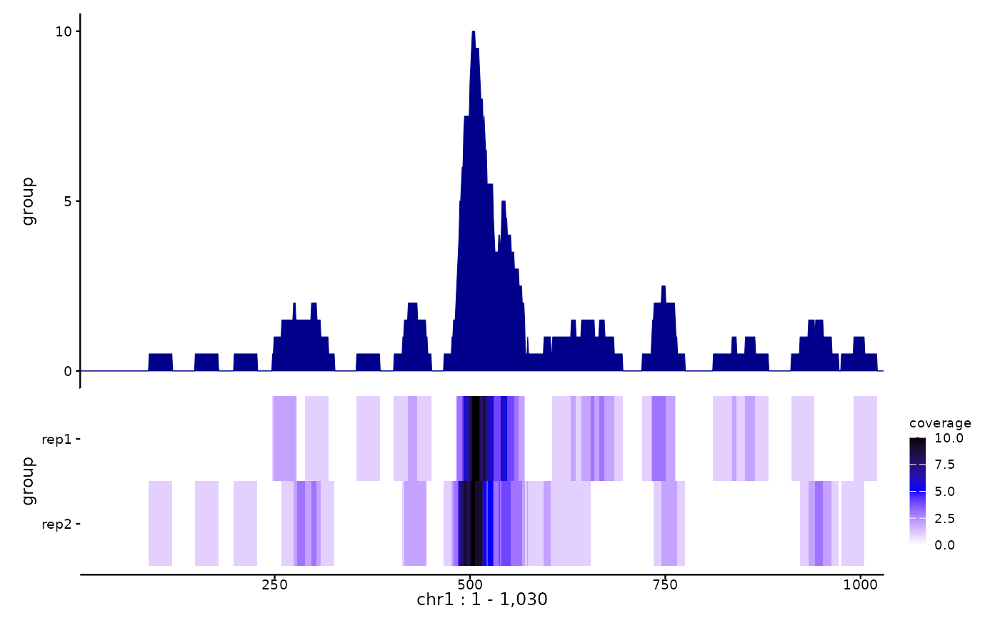

ggSignalTracks: Plot genomic signal tracks with ggplot2
Source:R/ggSignalTracks.R
ggSignalTracks.RdggSignalTracks: Plot genomic signal tracks with ggplot2
Usage
ggSignalTracks(
tracks,
region,
ensdb = NULL,
colors = "darkblue",
transcripts = c("full", "collapsed", "none"),
aggregation = c("mean+heatmap", "mean", "heatmap", "heatmap+mean"),
extend = 0,
showSE = FALSE,
nbins = 1000,
heatmap.palette = c("white", "blue", "black"),
binSummFn = c("mean", "max"),
sameLimits = TRUE,
gene_label = "symbol",
trans = c("none", "sqrt", "log1p"),
gene_color = "black",
baseTextSize = 9,
xAxis = TRUE,
coverage.linewidth = 0.2,
verbose = TRUE
)Arguments
- tracks
A named list or named character vector, where each element is the path to one or multiple bigwig files (nesting indicates grouping).
- region
The region to plot, provided either as a GRanges or character. If `ensdb` is given, `region` can also be a gene name, which will be looked up.
- ensdb
An optional
EnsDbobject form which to grab transcripts. A `TxDb` object should also be supported.- colors
A vector of colors for each element of `tracks` (nested elements have the same colors) which will be use to color the coverage profiles. Colors will be recycled if necessary.
- transcripts
Either 'full' (full transcripts plotted), 'collapsed' (to genes), or 'none'.
- aggregation
How to aggregate/show nested tracks. Either 'mean', 'heatmap' (no aggregation), or 'mean+heatmap' (both, default).
- extend
A numeric value indicating how much to extend beyond the `region`. If greater than 1, this indicates the number of nucleotides to add in both directions. If smaller than or equal to 1, this indicates the proportion of the region to add on both sides. Default 0.
- showSE
Logical; whether to show the standard error on the coverage tracks of aggregated data.
- nbins
The number of bins in which to divide the region.
- heatmap.palette
A character vector specifying the colors for the heatmap. If of length 1, is assumed to indicate the RColorBrewer palette to use. If of length>1, the colors will be used with
scale_fill_gradientn.- binSummFn
How to summarize date within a display bin. Either 'mean' (default) or 'max'.
- sameLimits
Logical; should the tracks have the same y-axis limits (and same color scale for heatmaps)?
- gene_label
What labels to print for genes. Either "symbol", "gene_id", "tx_name", or NULL.
- trans
Optional transformation of the data, either 'none' (default), 'sqrt', or 'log1p'.
- gene_color
The genes' color.
- baseTextSize
The base plotting text size.
- xAxis
Logical; whether to plot the xAxis in the bottom panel.
- coverage.linewidth
Line width of the coverage plots (above ribbons).
- verbose
Logical; whether to print progress messages.
Examples
# we create dummy data
bw1 <- tempfile(fileext=".bw")
cov1 <- GRanges("chr1", IRanges(1L+round(c(500+rnorm(15, sd=20),
1000*runif(20))), width=30))
bw2 <- tempfile(fileext=".bw")
cov2 <- GRanges("chr1", IRanges(1L+abs(round(c(490+rnorm(15, sd=30),
1000*runif(20)))), width=30))
seqlengths(cov1) <- seqlengths(cov2) <- c("chr1"=1500)
rtracklayer::export.bw(coverage(cov1), bw1)
rtracklayer::export.bw(coverage(cov2), bw2)
# then we create the ggplots, and plot them:
pl <- ggSignalTracks(list(group=c(rep1=bw1, rep2=bw2)), region="chr1:1-1030",
aggregation="heatmap+mean")
#> Loading BigWig data...
#> Importing: /tmp/RtmpVf3tYd/file1c9368ff726.bw
#> Importing: /tmp/RtmpVf3tYd/file1c93176a9c40.bw
patchwork::wrap_plots(pl, ncol=1, heights=c(2,1))
